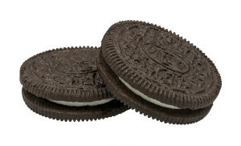

 Le petit piège avec les Oreo, c’est qu’on a tendance à les ingurgiter avec un verre de lait, qui lui n’est certainement pas végan. Mais le biscuit et sa petite mousse aussi blanche qu’un Tipp Ex ne contient aucune trace de lait ou de beurre, sa composition serait faite de lactosérum en poudre. Et si tu pensais que les Oreo t’apportait ta dose de calcium nécessaire pour avoir des os forts et robustes, bah en fait tu t’es TOTALEMENT fait avoir.
En effet, si les bonbek sont le plus souvent blindés de gélatine animale, ce n’est pourtant pas le cas pour ces deux marques de bonbek qui l’ont remplacé par de l’amidon et de l’agar-agar.
Le truc assez marrant avec les Tic Tac c’est qu’ils sont végans la plupart du temps SAUF quand ils sont accompagnés de saveur citron vert, fruit de la passion, cerise, ou orange. En gros sur Tic tac, seulement Tic est végan.
On s’est encore bien fait eu avec cette histoire de biscuits au beurre comme les spéculos. La recette de cette marque trompeuse se passe en effet de cette divine substance. Dans le même genre on compte aussi les cookies de la marque Granola (seulement ceux au chocolat noir attention).
Pas toutes attention ! Là encore il faut dénicher les bonnes marques : Lays, Vico, Pringles ou Ritz qui sont certes enrobées de saveurs artificielles en tous genres : barbecue, poulet, côte de bœuf, mais jamais, ô GRAND JAMAIS de matières animales.
Du pop-corn de la marque Menguy's
Encore une fois, pas de beurre qui tienne dans cette recette. On l’a remplacé par l’huile de palme ce qui n’est pas forcément mieux sur le plan moral. Sinon on peut aussi ne pas bouffer de pop-corn du tout et arrêter de soûler nos voisins au cinéma.